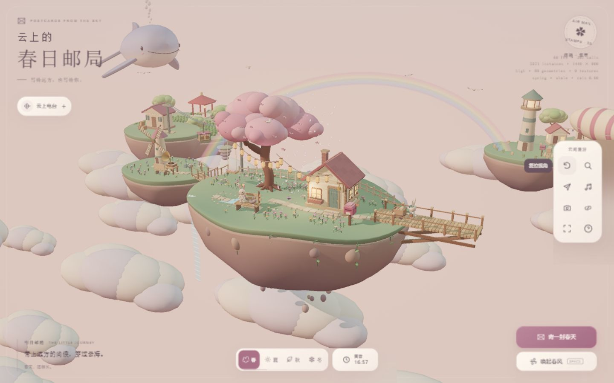
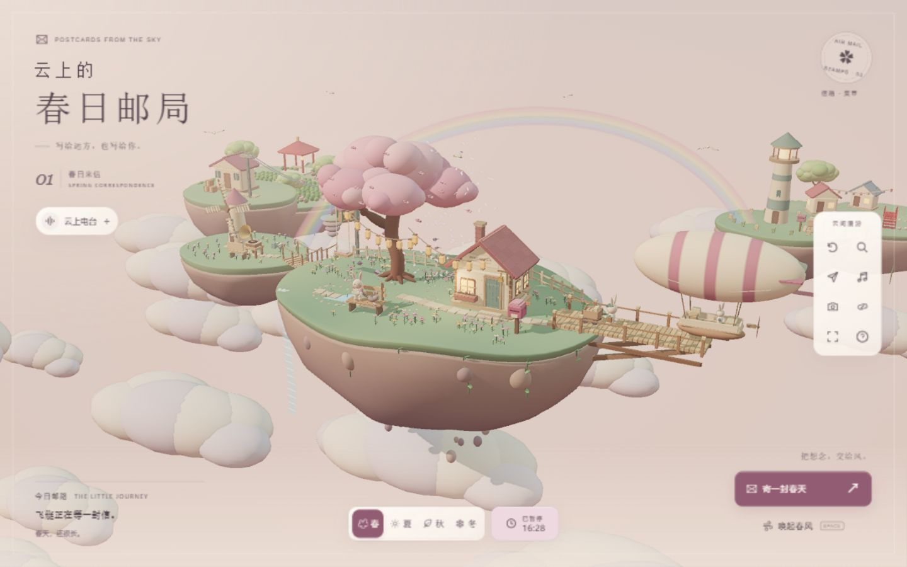
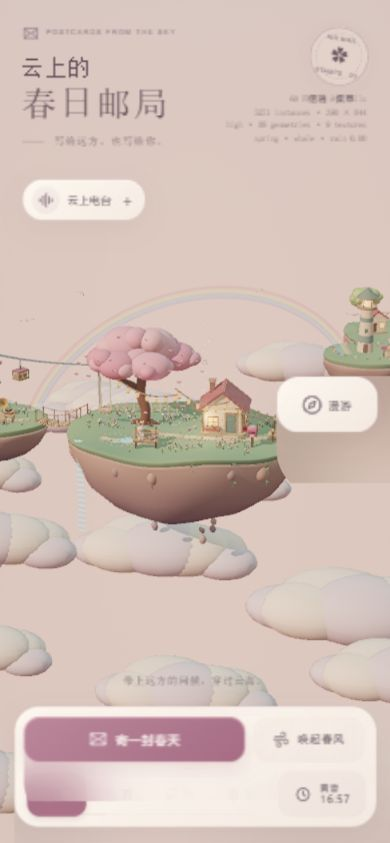
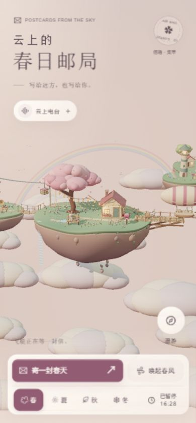
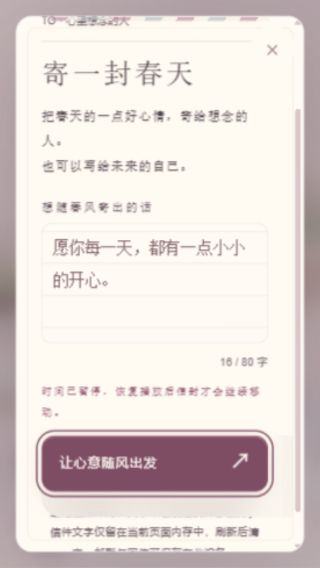
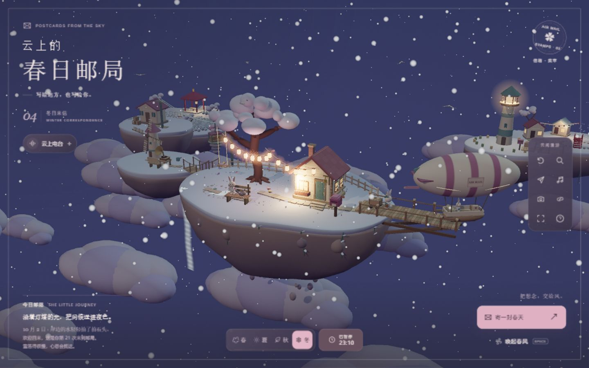
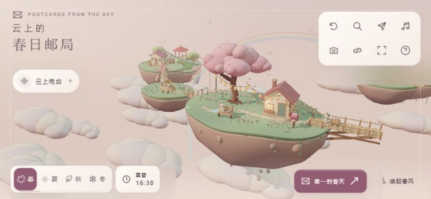

POSTCARDS FROM THE SKY · 2026.10.02
让界面成为小岛的信纸。
本轮以现有原创 Three.js 群岛为视觉中心，调整排版、留白、层级、色彩、动效、微交互与响应式。保留场景模型、世界规则、音乐和数据行为，加入四季来信编号，让品牌表达与季节变化相连。
01 / 桌面首屏 · 已复核


02 / 手机与寄信 · 已复核



03 / 昼夜与响应式 · 已复核


八项自检
| 维度 | 处理与复核 |
|---|---|
| 排版 | 扩大宋体标题，整理英文眉题、正文与辅助信息字号；输入框采用16px，避免小字输入。 |
| 留白 | 桌面以56px页边距组织内容；手机缩至26px，漫游入口移离场景中心。 |
| 视觉层级 | 寄信为唯一实色主行动；春风降为轻量次操作，邮路、季节和时钟分层排列。 |
| 色彩 | 深玫瑰、暖纸白与墨色统一控件；夜间反转主按钮明度，增强文字可读性。 |
| 动效 | 面板与信纸采用短距离淡入，按钮反馈控制在220–360ms；新增效果遵守减少动态效果媒体查询。 |
| 微交互 | 时间卡片与手机工具支持点外部、Escape关闭；暂停状态直接显示，手机工具打开弹窗后焦点返回可见入口。 |
| 响应式 | 检查320×568、约602×800、768×1024、844×390、1440×900；主要布局区域均位于视口内。短屏信纸关闭按钮实测位于y=26。 |
| 原创性 | 延续程序生成的邮局群岛，新增四季来信编号和收寄地址细节；没有替换成通用营销页面。 |
验证与范围
- Vitest：27个测试文件、147项测试通过；类型检查、ESLint、生产构建及差异空白检查通过。
- 浏览器实测：寄信成功、空输入禁用、Tab循环、Escape关闭、时间暂停、季节切换、工具展开收起、拍照弹窗返回焦点。
- 首次引导出现时暂时收起电台入口，避免两个面板重叠；引导结束后恢复。
- 去除纸面控件的背景模糊，消除复核中发现的方形合成边缘，同时减少多层背景采样。
截图来自本次实际运行。验证使用 Codex 内置 Chromium 浏览器和视口模拟，未覆盖真实 iOS/Android 设备、屏幕阅读器或全量 Playwright 回归；减少动态效果分支经过代码检查。开发热更新曾出现 WebGL 上下文重建失败，重试恢复，独立生产预览未复现。构建仍有现有 Three.js 分包大于500kB的提示。